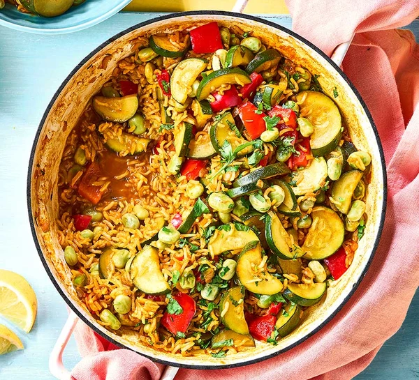

Vegan Paella

Description
This rice dish originates from Valencia, Spain and the name refers to the ‘paellera’ – the large, shallow frying pan – in which it is traditionally cooked.
In Spain, it’s often cooked outdoors and eaten straight from the pan. Although it usually includes various combinations of seafood and chicken, you can also have vegetable paellas.
Smoked paprika is an important ingredient in a vegan or vegetarian paella as it replaces the typical smoky flavour of chorizo in the classic version.
Ingredients
- 2 generous pinches of saffron
- 1 tbsp tomato purée
- 2 tsp vegetable bouillon powder
- 2 tbsp rapeseed oil
- 2 onions (320g), finely chopped
- 2 red peppers, deseeded and diced
- 3 garlic cloves, finely grated
- 2 tbsp soft thyme leaves
- 200g brown basmati rice
- 2 tsp smoked paprika
- 320g frozen broad beans
- 320g courgettes, halved and sliced
- 15g flat-leaf parsley, chopped
- 1 lemon, cut into wedges
Steps
- Put the kettle on to boil. Tip the saffron, tomato purée and bouillon powder into a large heatproof bowl, then pour over 1 litre boiling water and set aside.
- Heat the oil in a large paella pan or frying pan over a medium heat and fry the onion for 5 mins, stirring often until starting to soften.
- Add the peppers, garlic and thyme, and cook for a few minutes more. Tip in the rice and paprika, and continue to cook, stirring for about a minute. Pour in the saffron stock, then cover and simmer for 10 mins.
- Uncover and gently stir, then add the frozen beans and courgettes. Return to a simmer, then cover and cook for another 10 mins until the rice is tender and has absorbed the stock.
- Serve half the paella straightaway with lemon wedges for squeezing over. The other half will keep chilled for up to three days. To enjoy on another day, reheat in the microwave until piping hot throughout.
back